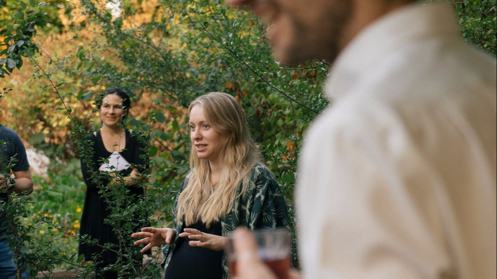
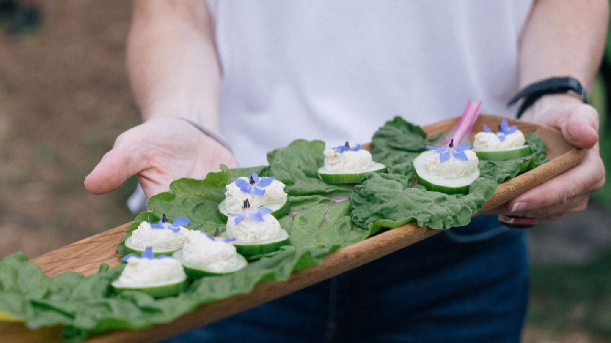

In today's digital age, social media has become one of the most powerful tools for brands to reach their audience. Social media platforms boast over five billion active users worldwide, representing more than 62% of the global population! Social media videography helps businesses create engaging content that connects with their audience.
At Munjiri Videos, we specialize in creating high-quality, eye-catching videos tailored for social media platforms like Instagram, TikTok, YouTube, LinkedIn, and Facebook.
Whether you're a business owner, charity or a content creator, social media videos can boost your brand's visibility, increase engagement, and drive sales. In this blog post, we'll explore what social media videography is, why it's essential, and how it can help your business thrive.
Check out our work here portfolio.
Social media videography is the creation of video content specifically designed to be shared on social media platforms. Unlike traditional videography, social media videos are often shorter, more engaging, and optimized for various social media formats. These videos can range from promotional clips and product demos to behind-the-scenes footage and user-generated content.
Social media videographers understand the unique requirements of each platform and create videos that maximize engagement and visibility. Whether it's a short Instagram Reel, a TikTok video, or a longer YouTube tutorial, our team ensures that your brand's message is delivered in the most impactful way possible.
1. Increase Brand Awareness
With billions of users active on social media daily, having high-quality video content can significantly increase your brand's visibility. Platforms like Instagram, TikTok, and YouTube are built around video content, making them the perfect place to showcase your brand.
2. Boost Engagement
Videos are the most shared form of content on social media. They generate more likes, comments, and shares than text or image posts. Engaging videos can help build a loyal community around your brand and encourage interaction with your audience.
3. Tell Your Brand Story
Video content allows you to tell your brand's story in a more personal and compelling way. Through storytelling, you can create an emotional connection with your audience, which is essential for building trust and loyalty.
4. Drive Sales
High-quality social media videos drive traffic to your website and convert viewers into customers. Promotional videos, product demos, and testimonials are all effective ways to showcase your products or services and encourage sales.
Instagram Videos
Instagram is one of the most popular social media platforms for visual content. We create Instagram Reels that grab attention and engage your audience.
TikTok Videos
TikTok is a powerful platform for reaching younger audiences. We create TikTok videos that help your brand stand out.
YouTube Videos
YouTube is the go-to platform for long-form video content. Whether you need product reviews, tutorials, or promotional videos, we produce high-quality YouTube videos that drive traffic and boost your brand.
LinkedIn Videos
LinkedIn videos are perfect for business-to-business marketing. We create professional videos that highlight your products, services, and company culture to engage your professional audience.
Facebook Videos
Facebook is still a powerful platform for engaging with your audience, especially for older demographics. Our team creates engaging Facebook video posts, stories, and ads that increase your reach and engagement.
Explore our services.
Storytelling is at the heart of effective video content. By weaving narratives into your videos, you can create a stronger connection with your audience. A well-crafted story not only engages viewers but also makes your brand more relatable and memorable. Whether it's sharing your brand's journey, customer testimonials, or behind-the-scenes footage, storytelling helps make your brand seem more real!


Step 1: Consultation
We start by understanding your business, brand, and goals. During the consultation, we'll discuss your target audience, preferred platforms, and the type of video content you need.
Step 2: Concept Development
We will develop a concept for your video based on your vision and brand identity. We'll create a detailed plan to ensure your message is delivered effectively.
Step 3: Filming
As experienced videographers we'll capture high-quality footage and ensure every shot aligns with your brand's aesthetic.
Step 4: Editing
As skilled editors we'll bring your video to life with professional editing, sound design and we'll optimize the video for social media.
Step 5: Delivery
Once the final video is ready, we'll deliver it in the appropriate formats for your social media platforms. We can also assist with posting and promoting your video content.
Professional and experienced videographers
Tailored video content for each social media platform
Affordable packages
High-quality production and editing
Our goal is to help your business succeed on social media through powerful, visually appealing videos that engage your audience and drive results.


What is social media videography?
Social media videography is the creation of video content specifically designed for social media platforms like Instagram, TikTok, YouTube, Facebook, and LinkedIn.
How much does social media videography cost?
The cost of social media videography varies depending on the type of video, length, and complexity.
What platforms do you create videos for?
We create videos for Instagram, TikTok, YouTube, LinkedIn, and Facebook.
How long does it take to create a social media video?
The timeline depends on the complexity of the video.
Get in Touch
Let us help you create captivating video content that grows your brand!
Contact us


Brand Video Production
Social Media Video Production
Nature Video Production
Creative Video Productions
Charity Video Production
Drone Videographer
Event Video Production
Product Video Production
Travel Video Production
Learn Video Making
Video Storytelling
Video Making Tips
Video Marketing & Social Media Strategies
Nature Stories
Behind the Scenes
Client Stories
Locations & Travel
Location
Based in Portugal and South Africa, offering video production services worldwide.
Email: katy@munjiri.com
Get updates and free resources.